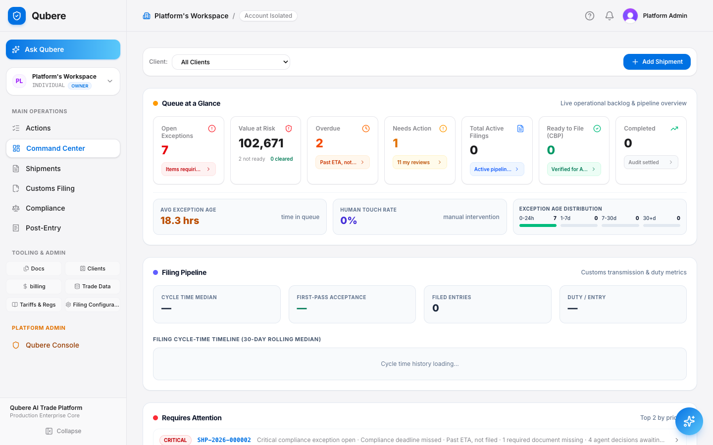
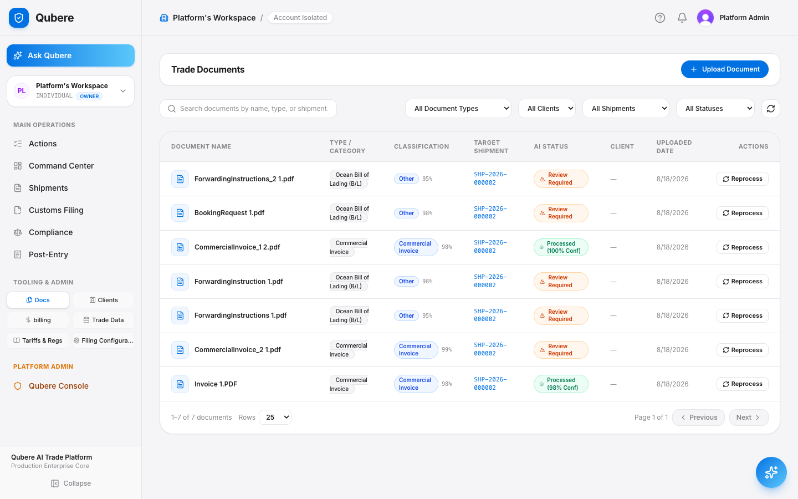
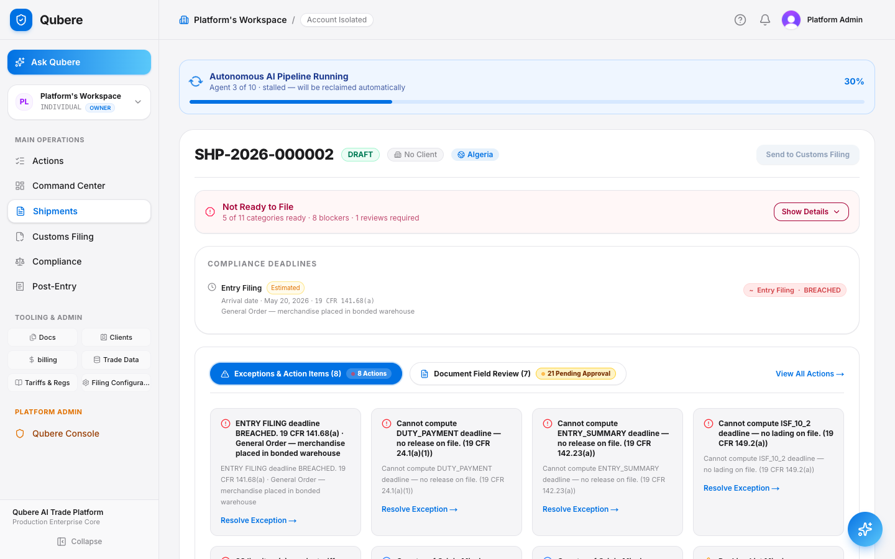
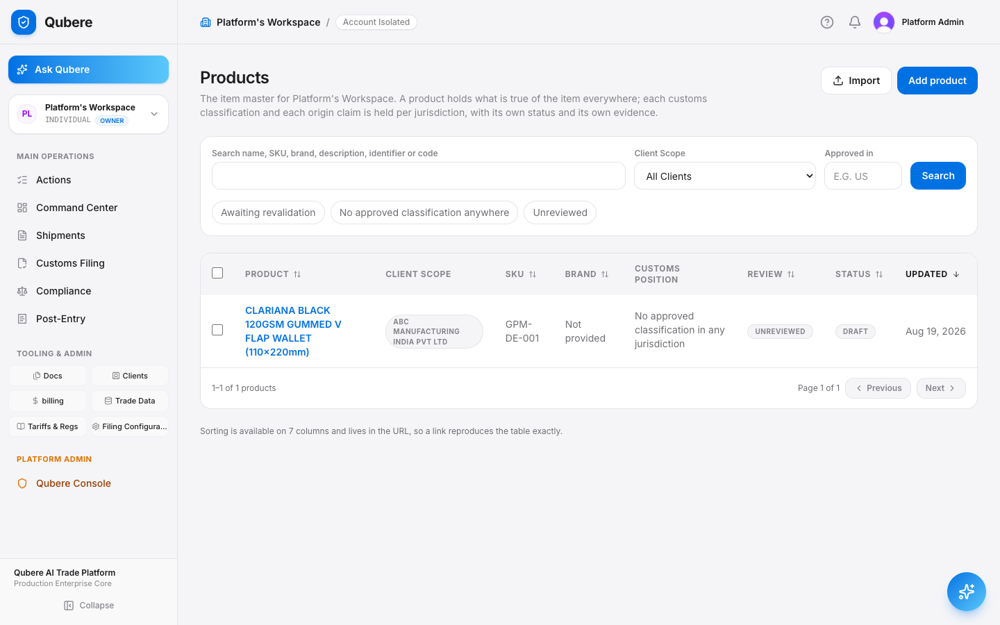
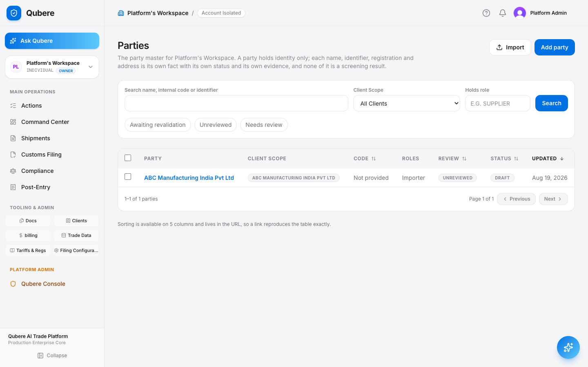
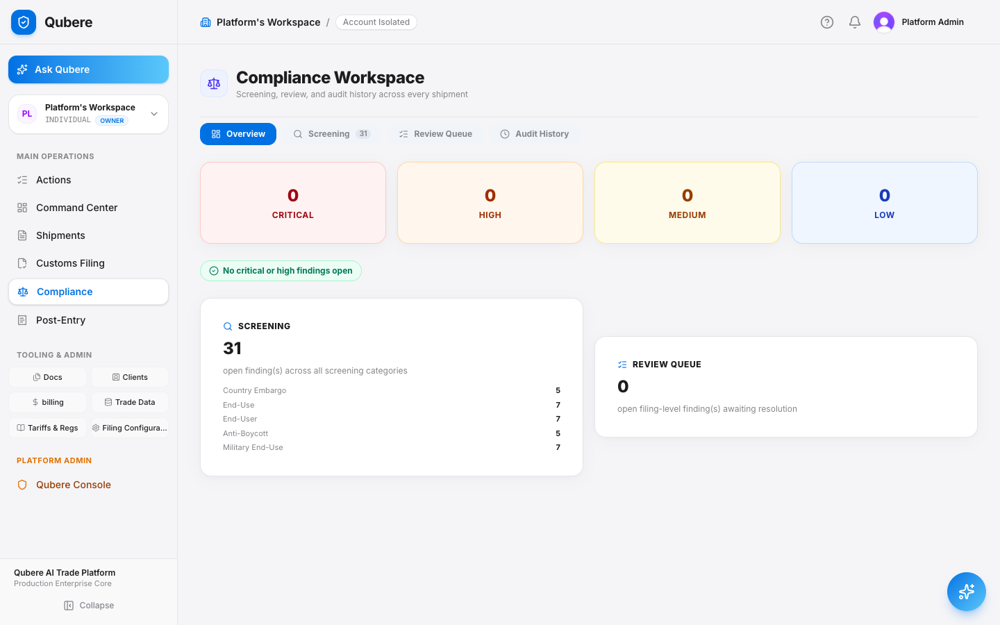
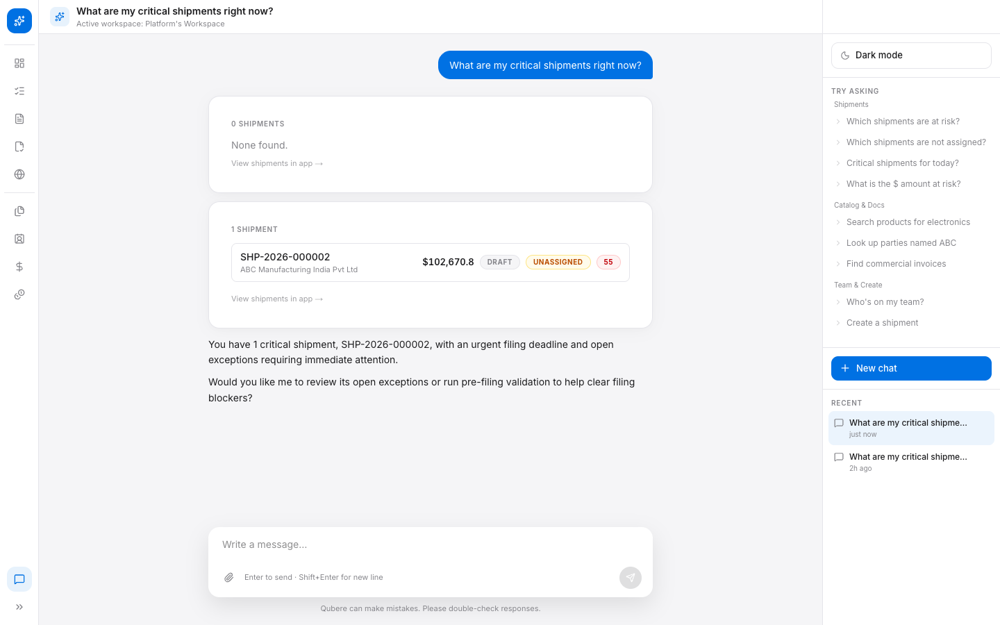
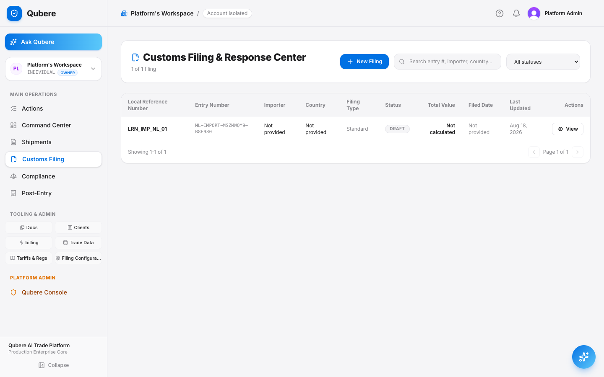
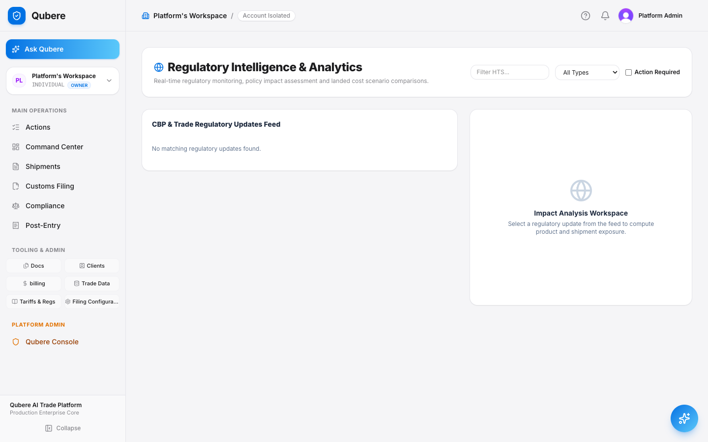

Qubere
From inbound trade documents to evidence-backed compliance decisions, broker approval, customs transmission and continuous monitoring.
Demo promise
Automate the routine flow. Surface the exceptions that need human judgment. Preserve the evidence behind every decision.
Demo story & operating model
The demonstration should feel like one transaction moving through a continuous control plane — not a tour of disconnected modules.
Customer outcome: my team manages exceptions, not every transaction.
Step 1 · Command Center
Open the Qubere Command Center before opening individual modules.

Step 2 · Inbound Transaction
Open Admin → Settings → Inbound Email Addresses and show the client/workspace-specific inbound address.
| Workspace | Inbound address | Status |
|---|---|---|
| Acme Imports | acme-imports@intake.qubere.ai | Active |
| Northwind Customs | northwind@intake.qubere.ai | Active |
Step 3 · Document Intelligence & Source Evidence
Open Documents / Inbound Review and the received document.

Step 4 · Shipment Creation & Enrichment
Open the matched/created Shipment.

Step 5 · Product Classification
Open a shipment line/product classification.

Step 6 · Restricted Party Screening
Open Compliance → Restricted Party Screening.

Step 7 · Broader Compliance Controls
Show that Embargo is a separate country/jurisdiction control.

Step 8 · License Determination & Management
Open License Determination.
Step 9 · Shipment Compliance Readiness
Show document, classification, RPS, embargo, forced-labor, end-use, license, data-quality and filing readiness statuses where available.
Step 10 · Exception-Driven Operations & Ask Qubere
Open Tasks / Exceptions and show items such as party review, missing origin evidence, classification review or license information required.

Step 11 · Customs Filing Preparation
Open Customs Filing → New or the prepared filing.

Step 12 · Broker Review / Maker-Checker
Advance the filing to ReadyForBrokerReview and show the prepared-by identity.
| Stage | Actor | Timestamp |
|---|---|---|
| Prepared | A. Chen | 09:12:04 |
| ReadyForBrokerReview | system | 09:12:05 |
| BrokerApproved | D. Kessler | 09:24:41 |
Step 13 · Transmit & Customs Response
In DEMO/SANDBOX only, transmit the approved filing.
| Status | Detail | Timestamp |
|---|---|---|
| BrokerApproved | Ready for transmission | 09:24:41 |
| TransmissionPending | Message queued to authority | 09:24:50 |
| Transmitted | ACE/ABI acknowledgment received | 09:25:12 |
| Released | CBP entry accepted, cargo released | 09:41:03 |
Step 14 · Audit & Evidence Trail
Open filing activity and Compliance execution/audit history.
| Time | Action | Entity | Actor | Src |
|---|---|---|---|---|
| 09:41:03 | FILING_RELEASED | FIL-2026-000188 | CBP/ACE | PIPE |
| 09:24:41 | FILING_BROKER_APPROVE | FIL-2026-000188 | D. Kessler | UI |
| 09:12:05 | RPS_RESCREEN | PTY-4471 | system | PIPE |
Step 15 · Continuous Monitoring / RDPS
Open Continuous Party Monitoring / Reference Data Changes if available.
| Party | Before | After | Transition |
|---|---|---|---|
| Severstroy OOO | CLEAR | HIT | NEW_HIT |
| Baltic Marine Ltd | POTENTIAL | HIT | ESCALATED |
Step 16 · Regulation-to-Impact-to-Action
Open Regulatory Intelligence / Reference Data Changes where available.

Run-of-show
A tight, timed pass through the whole story — adjust pacing to the audience without dropping a stage.
| Time | Story | Purpose |
|---|---|---|
| 0:00–1:00 | Command Center | Set the Agentic Customs operating model |
| 1:00–3:00 | Inbound intake | Email/client routing and secure intake |
| 3:00–5:00 | Document Intelligence | Extraction + source evidence |
| 5:00–7:00 | Shipment + classification | Canonical transaction and product decision |
| 7:00–10:00 | Compliance | RPS, embargo, end-use, UFLPA/anti-boycott as applicable |
| 10:00–12:00 | License + readiness | Determination and consolidated readiness |
| 12:00–14:00 | Exceptions + Ask Qubere | Explain, prioritize and prepare action |
| 14:00–17:00 | Customs filing | Preparation, broker approval, transmission |
| 17:00–19:00 | Audit + RDPS | Evidence trail and continuous monitoring |
| 19:00–20:00 | Executive close | Regulation → Impact → Action |
Customer questions to be ready for
| "Do we lose the original document?" | No. Open the Shipment Documents view. The source PDF remains available as evidence, and extracted fields can point back to it where source evidence exists. |
| "What stops a bad filing going out automatically?" | Show the filing state machine and broker gate. The current demo requires ReadyForBrokerReview → BrokerApproved before transmission, with maker/checker segregation. |
| "Do you only screen sanctioned names?" | No. Demonstrate restricted-party screening alongside configured end-use and anti-boycott controls, and other compliance domains that are live. |
| "Who is accountable?" | Show filing preparer, approver and transmitter identities plus Compliance execution/audit history. |
| "Can this operate per client?" | Show client/workspace-specific inbound addresses and tenant-scoped workflow. |
Demo preparation & recovery
Preparation
Use a DEMO or SANDBOX workspace — never a live transmission against production.
Have a commercial invoice or packing list PDF ready.
Have two demo users where possible: preparer and broker/approver.
Record the client inbound email address before the meeting.
Keep one preprocessed fallback document and shipment ready.
Recovery if a live step is slow
Delayed inbound email → move to the prepared inbound-review document.
Ambiguous shipment matching → demonstrate explicit human resolution.
No second user → show the maker/checker restriction and narrate the approval step.
Not live-clickable → state that clearly and show the persisted result or backend/admin evidence.
“We started with a trade document. Qubere understood it, created the transaction, evaluated compliance, surfaced the exceptions, prepared the filing, enforced broker accountability, transmitted to customs and preserved the evidence chain. The objective is not to remove compliance professionals or brokers — it is to let them spend their expertise on the transactions that actually need judgment.”
Know what is happening. Explain why. Anticipate what changes. Act on what matters. Automate what can safely proceed.